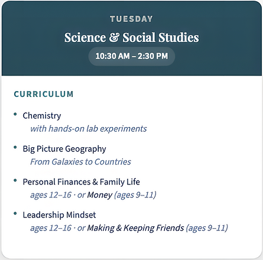

Tuesday Science & Social Studies
Science teaches us how the world works. Social studies teaches us who we are and where we came from. Financial literacy, leadership, and the art of relationships prepare students for everything else. Tuesday brings all of it together.
Tuesday is built around a simple conviction: a well-educated person understands both the natural world and the human one, and knows how to live wisely in both. Science at River Tech is hands-on and investigative. Students don’t just read about the natural world; they investigate it and experiment with it. Big Picture Geography pulls the lens back further, orienting students to creation, history, and human civilization in a way that is sweeping and wonder-filled. Our small class sizes (approximately 1:13 student-to-teacher ratio) mean every student gets personal attention, and River Tech’s competency-based model ensures your child masters concepts before moving on.
Tuesday also includes age-differentiated classes in financial literacy and social development. These are the conversations every young person deserves to have before life forces them to figure it out alone. Younger students build a foundation in money and friendship; older students go deeper into personal finances, family responsibility, and the character traits that define people who lead well.



River Tech School of Performing Arts & Technology in Post Falls, Idaho
Small classes. Personal attention. A teaching team that knows every student by name. River Tech is a private Christian school in Post Falls offering hands-on education in the arts, sciences, technology, and life skills. Parents and students consistently rate it the best choice for families who want more than a standard classroom experience.